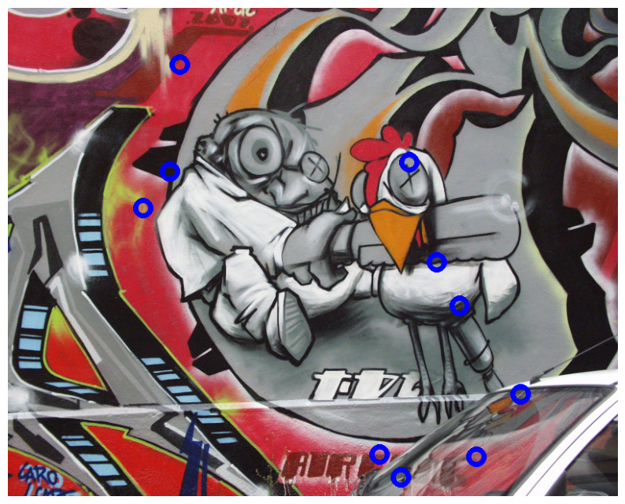
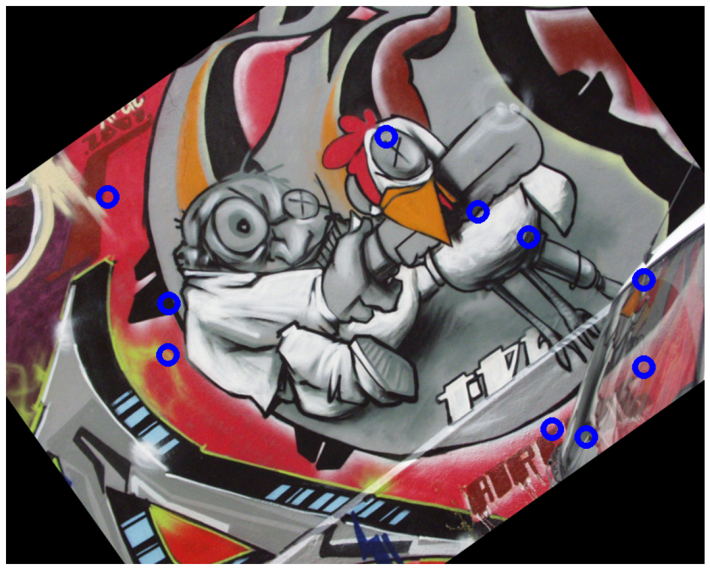
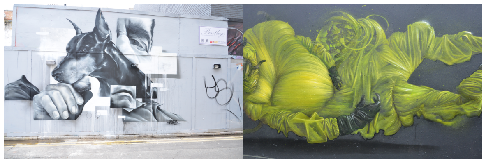
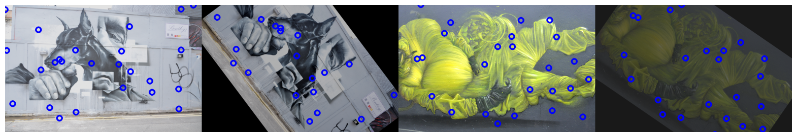
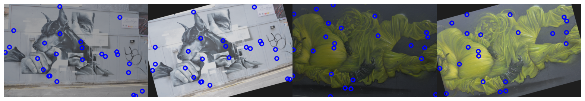
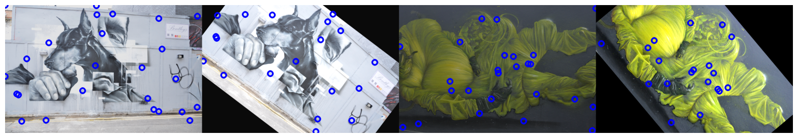
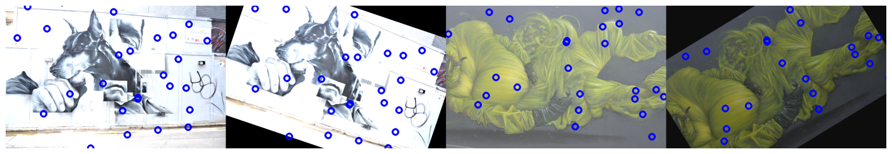
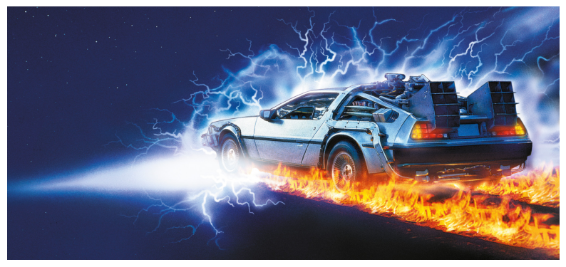
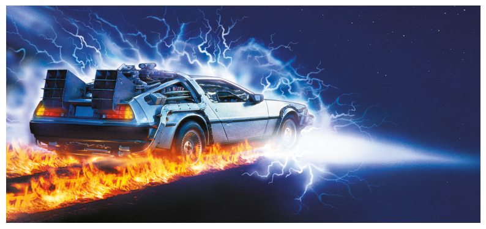

%%capture
!pip install kornia
!pip install kornia-rsGeometric image and points transformations
Intermediate
Keypoints
kornia.augmentation
kornia.geometry
In this tutorial we will learn how to generate and manipulate geometrically synthetic images and use their transformations to manipulate 2D points and how to combine with
torch components to perform data augmention.

Kornia recently introduced a module called
kornia.augmentationwhich among other functionalities, provides a set of operators to perform geometric data augmentation with the option to retrieve the applied transformation to the original image in order to perform transformations of additional data such keypoints, bound boxes, or others.Our geometric transformations API is compliant with
torchvisionincluding a few extras such as the flagreturn_transformthat returns to the user the applied transformation to the original.Additionally, our API inherits from
nn.Modulemeaning that can be combined withnn.Sequentialand chain the different applied transformations, when this last one is used. Moreover, we can compute in batches of images using different devices such CPU/GPU (and TPU in future).Finally, all the operators are fully differentiable, a topic that we will cover in future tutorials so that users can make use of this feature.
\
In brief, in this tutorial we will learn how to:
- Use
kornia.augmentation.RandomAffineto generate random views and retrieve the transformation. - Use
kornia.geometry.transform_pointsto manipulate points between views. - Combine the above in a
nn.Modulewith otherkornia.augmenationcomponents to generate a complete augmentation pipeline.
Installation
We first install Kornia v0.2.0 and Matplotlib for visualisation.
To play with data we will use some samples from HPatches dataset [1].
[1] HPatches: A benchmark and evaluation of handcrafted and learned local descriptors, Vassileios Balntas, Karel Lenc, Andrea Vedaldi and Krystian Mikolajczyk, CVPR 2017.
import io
import requests
def download_image(url: str, filename: str = "") -> str:
filename = url.split("/")[-1] if len(filename) == 0 else filename
# Download
bytesio = io.BytesIO(requests.get(url).content)
# Save file
with open(filename, "wb") as outfile:
outfile.write(bytesio.getbuffer())
return filename
download_image("https://github.com/kornia/data/raw/main/homography/img1.ppm")
download_image("https://github.com/kornia/data/raw/main/v_dogman.ppm")
download_image("https://github.com/kornia/data/raw/main/v_maskedman.ppm")
download_image("https://github.com/kornia/data/raw/main/delorean_side.png")'delorean.png'Setup
We will import the needed libraries and create a small functionalities to make use of OpenCV I/O.
%matplotlib inline
import cv2
import kornia as K
import matplotlib.pyplot as plt
import numpy as np
import torch
import torch.nn as nnDefine a function for visualisation using Matplotlib.
def imshow(image: np.ndarray, height: int, width: int):
"""Utility function to plot images."""
plt.figure(figsize=(height, width))
plt.imshow(image)
plt.axis("off")
plt.show()Since Kornia don’t provide render functionalities, let’s use OpenCV cv2.circle to draw points.
def draw_points(img_t: torch.Tensor, points: torch.Tensor) -> np.ndarray:
"""Utility function to draw a set of points in an image."""
# cast image to numpy (HxWxC)
img: np.ndarray = K.utils.tensor_to_image(img_t)
# using cv2.circle() method
# draw a circle with blue line borders of thickness of 2 px
img_out: np.ndarray = img.copy()
for pt in points:
x, y = int(pt[0]), int(pt[1])
img_out = cv2.circle(img_out, (x, y), radius=10, color=(0, 0, 255), thickness=5)
return np.clip(img_out, 0, 1)Transform single image
In this section we show how to open a single image, generate 2d random points and plot them using OpenCV and Matplotlib.
Next, we will use kornia.augmentation.RandomAffine to gerenate a random synthetic view of the given image and show how to retrieve the generated transformation to later be used to transform the points between images.
# load original image
img1: torch.Tensor = K.io.load_image("img1.ppm", K.io.ImageLoadType.RGB32)[None, ...] # BxCxHxW
# generate N random points within the image
N: int = 10 # the number of points
B, CH, H, W = img1.shape
points1: torch.Tensor = torch.rand(1, N, 2)
points1[..., 0] *= W
points1[..., 1] *= H
# draw points and show
img1_vis: np.ndarray = draw_points(img1[0], points1[0])
imshow(img1_vis, 10, 10)
Now lets move to a bit more complex example and start to use the kornia.augmentation API to transform an image and retrieve the applied transformation. We’ll show how to reuse this transformation to project the 2d points between images.
# declare an instance of our random affine generation eith `return_transform`
# set to True, so that we recieve a tuple with the transformed image and the
# transformation applied to the original image.
transform: nn.Module = K.augmentation.RandomAffine(degrees=[-45.0, 45.0], p=1.0)
# tranform image and retrieve transformation
img2 = transform(img1, transform=transform)
trans = transform.get_transformation_matrix(img1)
# transform the original points
points2: torch.Tensor = K.geometry.transform_points(trans, points1)
img2_vis: np.ndarray = draw_points(img2, points2[0])
imshow(img2_vis, 15, 15)
Transform batch of images
In the introduction we explained about the capability of kornia.augmentation to be integrated with other torch components such as nn.Module and nn.Sequential.
We will create a small component to perform data augmentation on batched images reusing the same ideas showed before to transform images and points.
First, lets define a class that will generate samples of synthetic views with a small color augmentation using the kornia.augmentation.ColorJitter and kornia.augmentation.RandomAffine components.
NOTE: we set the forward pass to have no gradients with the decorator @torch.no_grad() to make it more memory efficient.
from typing import Dict
class DataAugmentator(nn.Module):
def __init__(self) -> None:
super().__init__()
# declare kornia components as class members
self.k1 = K.augmentation.RandomAffine([-60, 60], p=1.0)
self.k2 = K.augmentation.ColorJitter(0.5, 0.5, p=1.0)
@torch.no_grad()
def forward(self, img1: torch.Tensor, pts1: torch.Tensor) -> Dict[str, torch.Tensor]:
assert len(img1.shape) == 4, img1.shape
# apply geometric transform the transform matrix
img2 = self.k1(img1)
trans = self.k1.get_transformation_matrix(img1)
# apply color transform
img1, img2 = self.k2(img1), self.k2(img2)
# finally, lets use the transform to project the points
pts2: torch.Tensor = K.geometry.transform_points(trans, pts1)
return dict(img1=img1, img2=img2, pts1=pts1, pts2=pts2)Lets use the defined component and generate some syntethic data !
# load data and make a batch
img1: torch.Tensor = K.io.load_image("v_dogman.ppm", K.io.ImageLoadType.RGB32)[None, ...] # BxCxHxW
img2: torch.Tensor = K.io.load_image("v_maskedman.ppm", K.io.ImageLoadType.RGB32)[None, ...] # BxCxHxW
# crop data to make it homogeneous
crop = K.augmentation.CenterCrop((512, 786))
img1, img2 = crop(img1), crop(img2)
# visualize
img_vis = torch.cat([img1, img2], dim=-1)
imshow(K.tensor_to_image(img_vis), 15, 15)
# create an instance of the augmentation pipeline
# NOTE: remember that this is a nn.Module and could be
# placed inside any network, pytorch-lighting module, etc.
aug: nn.Module = DataAugmentator()
for _ in range(5): # create some samples
# generate batch
img_batch = torch.cat([img1, img2], dim=0)
# generate random points (or from a network)
N: int = 25
B, CH, H, W = img_batch.shape
points: torch.Tensor = torch.rand(B, N, 2)
points[..., 0] *= W
points[..., 1] *= H
# sample data
batch_data = aug(img_batch, points)
# plot and show
# visualize both images
img_vis_list = []
for i in range(2):
img1_vis: np.ndarray = draw_points(batch_data["img1"][i], batch_data["pts1"][i])
img_vis_list.append(img1_vis)
img2_vis: np.ndarray = draw_points(batch_data["img2"][i], batch_data["pts2"][i])
img_vis_list.append(img2_vis)
img_vis = np.concatenate(img_vis_list, axis=1)
imshow(img_vis, 20, 20)




BONUS: Backprop to the future
One of the main motivations during the desing for the kornia.augmentation API was to give to the user the flexibility to retrieve the applied transformation in order to achieve one of the main purposes of Kornia - the reverse engineering.
In this case we will show how easy one can combine Kornia and PyTorch components to undo the transformations and go back to the original data.
“Wait a minute, Doc. Are you telling me you built a time machine…out of a PyTorch?” - Marty McFLy
# lets start the Delorean engine
delorean: torch.Tensor = K.io.load_image("delorean_side.png", K.io.ImageLoadType.RGB32)[None, ...] # BxCxHxW
imshow(K.utils.tensor_to_image(delorean), 10, 10)“If my calculations are correct, when this baby hits 88 miles per hour, you’re gonna see some serious shit.” - Doc. Brown
# turn on the time machine panel (TMP)
TMP = K.augmentation.RandomHorizontalFlip(p=1.0)
delorean_past = TMP(delorean) # go !
time_coords_past = TMP.get_transformation_matrix(delorean)
imshow(K.utils.tensor_to_image(delorean_past), 10, 10)
Let’s go back to the future !
“Marty! You’ve gotta come back with me!” - Doc. Brown
# lets go back to the past
time_coords_future: torch.Tensor = torch.inverse(time_coords_past)
H, W = delorean_past.shape[-2:]
delorean_future = K.geometry.warp_perspective(delorean_past, time_coords_future, (H, W))
imshow(K.utils.tensor_to_image(delorean_future), 10, 10)